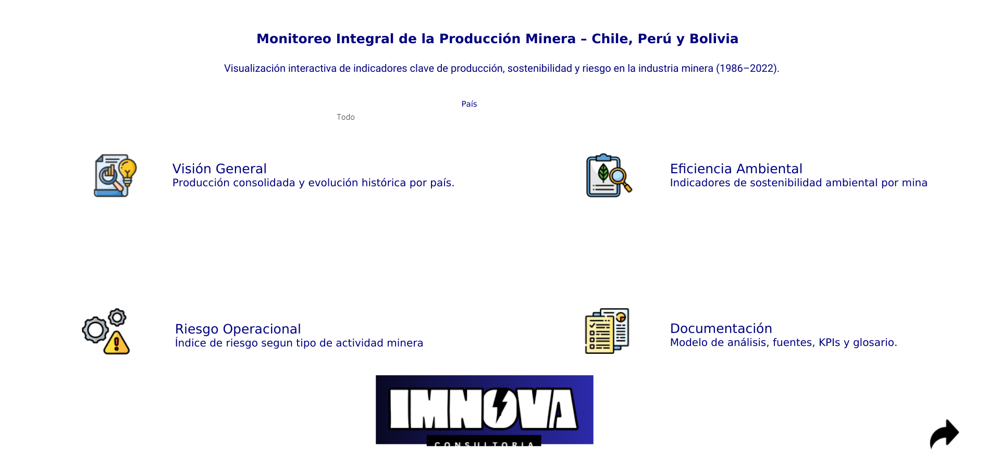

DATA ANALYTICS
Monitoreo Integral de la Producción Minera
Dashboard interactivo en Tableau que evalúa el riesgo operacional y la sostenibilidad ambiental de 2.000 minas en Chile, Perú y Bolivia, cruzando producción histórica (1986-2022), consumo de agua, emisiones de CO₂ y tipo de mineral. Diseñado para simular el caso de uso de una consultora minera, priorizando decisiones de inversión según sostenibilidad y riesgo.
Tableau Public · Modelado de datos · Storytelling con datos
Abrir Dashboard →